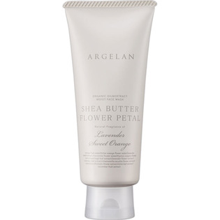

返回列表
产品名称：アルジェラン モイストフェイスウォッシュ

カラーズ アルジェラン モイストフェイスウォッシュ １３０ｇ
メーカー カラーズ
JANコード 4571242812448
商品の特徴
花弁スクラブ入り生シアバターの濃密泡洗顔
- 成分・分量
- カリ石ケン素地・グリセリン・水・ＢＧ・ステアリン酸グリセリル・シア脂・ダマスクバラ花・カミツレ花・オレンジ油・ラベンダー油・オレンジ果実水・ビターオレンジ花水・ラベンダー水・ローマカミツレ花水・タチジャコウソウ花／葉エキス・セージ葉エキス・ラベンダー花エキス・ＥＤＴＡ－４Ｎａ・ローズマリー葉エキス・カミツレ花エキス・ポリクオタニウム－７・トウキンセンカ花エキス・エタノール・オリーブ葉エキス・キュウリ果実エキス・カラメル
- 用法及び用量
- ＜使用方法＞
適量（大き目のパール粒大）を手にとり、水またはぬるま湯を加えよく泡立ててください。Tゾーンを中心に顔全体を泡で包み込むようにして洗った後、洗い流してください。